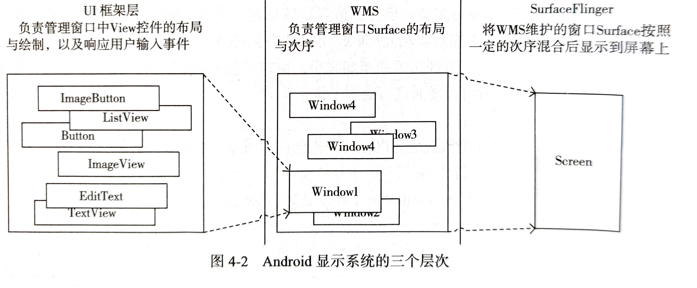

初识
Window
Window 是屏幕上一块用于绘制各种 UI 元素并可以响应用户输入的一个矩形区域。
原理上来说，Window 是独自占有一个 Surface 实例的显示区域。
Activity 通过 Surface 显示
- 应用通过 Canvas 或 OpenGL 在画布 Surface 上作画
- SurfaceFlinger 将多块 Surface 的内容按照特定顺序（Z-order）进行混合并输出到 FrameBuffer，从而将界面显示
窗口的创建、绘制与销毁
在客户端创建一个窗口的简单步骤：
请求 IWindowSession 和 WMS 实例。客户端可以通过 IWindowSession 向 WMS 发送请求
1
2
3
4
5IWindowManager wms = IWindowManager.Stub.asInterface(
ServiceManager.getService(Context.WINDOW_SERVICE));
IWindowSession mSession = null;
mSession = WindowManagerGlobal.getWindowSession(Looper.myLooper());创建并初始化 WindowManager.LayoutParams
1
2
3
4
5
6
7
8
9
10
11
12
13
14
15
16
17
18
19// 获取屏幕分辨率
IDisplayManager dm = IDisplayManager.Stub.asInterface(
ServiceManager.getService(Context.DISPLAY_SERVICE));
DisplayInfo di = dm.getDisplayInfo(Display.DEFAULT_DISPLAY);
Point screenSize = new Point(di.appWidth, di.appHeight);
// 设置LayoutParams
LayoutParams mLp = new LayoutParams();
// type为SYSTEM_ALERT，ZOrder顺序比较靠前
mLp.type = LayoutParams.TYPE_SYSTEM_ALERT;
mLp.setTitle("RayWindow");
// 设定左上角坐标和宽高
mLp.gravity = Gravity.LEFT | Gravity.TOP;
mLp.x = screenSize.x / 4;
mLp.y = screenSize.y / 4;
mLp.width = screenSize.x / 2;
mLp.height = screenSize.y / 2;
// 希望输入事件发生在窗口之外时，其他窗口也能接收输入事件
mLp.flags = mLp.flags | WindowManager.LayoutParams.FLAG_NOT_TOUCH_MODAL;向 WMS 添加一个 WindowToken
1
wms.addWindowToken(mToken, WindowManager.LayoutParams.TYPE_SYSTEM_ALERT);
向 WMS 添加一个窗口。需要在 LayoutParams 中指明此窗口所属的 WindowToken（系统窗口除外）
1
2
3
4// 设置窗口隶属的token
mLp.token = mToken;
// 通过IWindowSession将窗口安装进WMS
mSession.add(mWindow, 0, mLp, View.VISIBLE, mInsets, mInputChannel);向 WMS 申请对窗口进行 ReLayout。也就是根据窗口新的属性去调整其 Surface 相关的属性，或者重新创建一个 Surface。向 WMS 添加窗口之后，仅仅是将其在 WMS 中进行了注册，只有经过重新布局，窗口才拥有 WMS 为其分配的画布
1
2
3/* 通过IWindowSession要求WMS对本窗口进行relayout，WMS会为窗口创建一个Surface并保存在参数mSurface中，同时，这个Surface被WMS放置在LayoutParams指定的位置上 */
mSession.relayout(mWindow, 0, mLp, mLp.width, mLp.height, View.VISIBLE,
0, mFrame, mInsets, mVisibleInsets, mConfig, mSurface);
绘制窗口的过程：
通过 Surface.lock() 函数获取可以在其上作画的 Canvas 实例
1
Canvas canvas = mSurface.lockCanvas(null);
使用 Canvas 实例作画
1
2
3
4canvas.drawColor(Color.DKGRAY);
canvas.drawRect(2 * mLp.width * time /1000
- mLp.width, 0, 2, * mLp.width * time
/1000, mLp.height, mPaint);通过 Surface.unlockCanvasAndPost() 函数提交绘制结果
1
mSurface.unlockCanvasAndPost(canvas);
Android 显示系统的三个层次

- 第一层是 UI 框架层，其工作为在 Surface 上绘制 UI 元素以及响应输入事件
- 第二层是 WMS，其工作为管理 Surface 的分配、层级顺序等
- 第三层是 SurfaceFlinger，负责将多个 Surface 混合并输出
WMS 的构成
WMS 的创建
WMS 的创建分三个阶段
创建 WMS 的实例
1
2
3
4
5
6WindowManagerService wm = null;
......
wm = WindowManagerService.main(context, power, display, inputManager, uiHandler,
wmHandler, factoryTest != SystemServer.FACTORY_TEST_LOW_LEVEL,
!firstBoot, onlyCore);
ServiceManager.addService(Context.WINDOW_SERVICE, wm);初始化显示信息
1
wm.displayReady();
处理 systemReady 通知
1
wm.systemReady();
WindowManagerService.main()
WindowManagerService.main() 的参数中传入了一个 wmHandler，是 SystemServer 为 WMS 创建的，它运行在一个名为 WindowManager 的 HandlerThread 中。HandlerThread 由 ServerThread 专为 WMS 创建
1 | wmHandler.runWithScissors(new Runnable() { |
WindowManagerService.main() 在 “WindowManager” 线程中创建了一个 WindowManagerService 的新实例。WMS 中所有需要的 Looper 对象（Handler, Choreographer 等）均会运行在该线程。
WindowManagerService.WindowManagerService()
该方法中定义了一些重要的组件：
DisplayContent 列表：一个 DisplayContent 代表一块屏幕
1
2
3
4
5
6mDisplayManager. = (DisplayManager)context.getSystemService(Context.DISPLAY_SERVICE);
mDisplayManager.registerDisplayListener(this, null);
Display[] displays = mDisplayManager.getDisplays();
for (Display display : displays) {
createDisplayContentLocked(display);
}InputManagerService：输入事件最终要分发给具有焦点的窗口，而 WMS 是窗口的管理者
1
mInputManager = inputManager;
WindowAnimator：管理所有窗口的动画
1
mAnimator = new WindowAnimator(this, context, mPolicy);
WindowManagerPolicy：WMS 中非常重要的一部分，定义了很多与窗口相关的策略
1
initPolicy(uiHandler);
最后将自己加入到 Watchdog 中
1 | Watchdog.getInstance().addMonitor(this); |
displayReady()
主要是初始化显示尺寸的信息。在其完成后，WMS 会要求 AMS 进行第一次 Configeration 更新
systemReady()
WMS 本身不会进行任何操作，直接调用 mPolicy 的 systemReady() 函数
WMS 的重要成员

mInputManager：InputManagerService 的实例，用于管理每个窗口的 InputChannel 以及事件派发。
mChoreographer：Choreographer 的实例，能从显示子系统获取 VSYNC 同步事件，从而在合适的时机通知渲染动作。WMS 使用 Choreographer 负责驱动所有的窗口动画、屏幕旋转动画、墙纸动画的渲染。
mAnimator：WindowAnimator 的实例，在 Choreographer 的驱动下逐个渲染所有动画。
mPolicy：WindowPolicyManager 的一个实现，目前只有 PhoneWindowManager 一个实现类。是窗口管理策略的接口类，用来定义一个窗口策略所要遵循的通用规范，并提供了WindowManager所有的特定的UI行为。
mDisplayContents：一个 DisplayContent 类型的列表。一个 DisplayContent 代表一块屏幕，用一个整型变量作为 ID，手机默认屏幕的 ID 由 Display.DEFAULT_DISPLAY 常量指定。
mTokenMap：从 IBinder 到 WindowToken 的映射，保存了所有的 WindowToken。
mWindowMap：从 IBinder 到 WindowState 的映射，保存了所有窗口的状态信息，用于窗口管理。
mSessions：保存了所有当前想向 WMS 寻求窗口管理服务的客户顿。每个进程对应一个 Session。
mRotation：保存当前手机的旋转状态。
WMS 的窗口管理结构
除子窗口外，添加任何一个窗口都必须指明其所属的 WindowToken；窗口在 WMS 中通过一个 WindowState 实例进行管理和保管。同时必须在窗口中指明其所属的 DisplayContent，以便确定窗口将被显示到哪一个屏幕上。
WindowToken
WindowToken 的意义
- WindowToken 将属于同一个应用组件（Activity, InputMethod, Wallpaper 以及 Dream）的窗口组织在一起。在 WMS 对窗口的管理过程中，用 WindowToken 指代一个应用组件。
- WindowToken 具有令牌的作用，是对应用组件的行为进行规范管理的一个手段。 WindowToken 由应用组件或其管理者负责向 WMS 声明并持有。应用组件在需要新窗口时，不许提供 WindowToken 以表明自己的身份，并且窗口的类型必须同所持有的 WindowToken 类型一致。
- 创建系统窗口无需提供 Token，因为 WMS 会隐式地为其声明一个 WindowToken，但只有拥有 SYSTEM_ALERT_WINDOW 或 INTERNAL_SYSTEM_WINDOW 权限才能创建此类型的窗口。
- 隐式与显式的区别在于，当隐式创建的 WindowToken的最后一个窗口被移除后，此 WindowToken 会一并从 mTokenMap 中移除；而显式创建的 WindowToken 只能通过 removeWindowToken() 显式地移除。
向 WMS 声明 WindowToken
只要是一个 Binder 对象，都可以作为 Token 向 WMS 进行声明。对 WMS 的客户端来说，Token 仅仅是一个 Binder 对象而已。
WindowManagerService.addWindowToken
1 |
|
使用 addWindowToken() 声明 Token，会在 WMS 中创建一个 WindowToken 实例，这里第四个参数为 true，代表这里的 WindowToken 是被声明为显式的。
WindowToken.WindowToken()
1 | WindowToken(WindowManagerService service, IBinder _token, int type, |
WindowToken.onDisplayChanged()
1 |
|
DisplayContent.reParentWindowToken()
1 | void reParentWindowToken(WindowToken token) { |
DisplayContent.addWindowToken()
1 | private void addWindowToken(IBinder binder, WindowToken token) { |
创建 WindowToken 的过程中会通知 DisplayConent 的 onDisplayChanged() 回调，最终在 DisplayContent.addWindowToken() 中将 WindowToken 实例添加到 mTokenMap 中，键值为客户端用于声明 Token 的 Binder 实例。
WindowToken 的两层含义
- 对客户端而言的 Token，是任意一个 Binder 实例，对客户端来说仅仅是一个创建窗口的令牌，没有其他含义。
- 对 WMS 而言的 WindowToken，是一个 WindowToken 类的实例，保存了对应于客户端一侧的 Token （Binder 实例），并以这个 Token 为键，存储于 mTokenMap 中。客户端一侧的 Token 是否已被声明，取决于其对应的 WindowToken 是否位于 mTokenMap 中。
从这里来看，也就是前面说的 mTokenMap 是从 IBinder 到 WindowToken 的映射。
关于 AppWindowToken
Activity 的 Token（ActivityRecord.appToken）并非仅仅是一个 Binder 实例。它的类型是 IApplicationToken.Stub
1 | final IApplicationToken.Stub appToken; |
AMS 通过 ActivityRecord 表示一个 Activity。而 ActivityRecord 的 appToken 在其构造函数中被创建
1 | ActivityRecord(ActivityTaskManagerService _service, WindowProcessController _caller, |
所以每个 Activity 都有其各自的 appToken。
WMS 接受了 AMS 对 Token 的声明，并为 appToken 创建了唯一的一个 AppWindowToken。因此这个 appToken 粘连了 AMS 的 ActivityRecord 与 WMS 的 AppWindowToken。只要给定一个 ActivityRecord，都可以通过 appToken 在 WMS 中找到一个对应的 AppWindowToken，从而使 AMS 拥有了操控 Activity 窗口绘制的能力。
WindowState
当向 WMS 添加一个窗口时，WMS 会为其创建一个 WindowState
WindowState 标识一个窗口的所有属性，它是 WMS 中事实上的窗口。
类似于 WindowToken，WindowState 在客户端一侧也有一个对应的类型：IWindow.Stub。IWindow.Stub 提供了很多与窗口管理相关通知的回调，例如尺寸变化、焦点变化等。
类似 mTokenMap，WindowState 被保存在 mWindowMap 中，键值为 IWindow 的 Bp 端。mWindowMap 是整个系统所有窗口的全集。两个 map 的键都是 IBinder，区别是：mTokenMap 的键值可能是 IAppWindowToken 的 Bp 端（使用 addAppToken 声明），或者是其他任意一个 Binder 的 Bp 端（使用 addWindowToken 声明）；而 mWindowMap 的键值一定是 IWindow 的 Bp 端。
WindowToken 和 WindowState 的关系


DisplayContent
一个 DisplayContent 代表一个屏幕，隶属于一个 DisplayContent 的窗口会被显示在同一个屏幕中。每个 DisplayContent 都对应一个唯一的 ID，在添加窗口时可以通过指定整个 ID 来决定将其显示在哪个屏幕中。
处于不同 DisplayContent 的窗口在布局、显示顺序以及动画处理上不会产生任何耦合。
参考资料：
《深入理解Android：卷III》